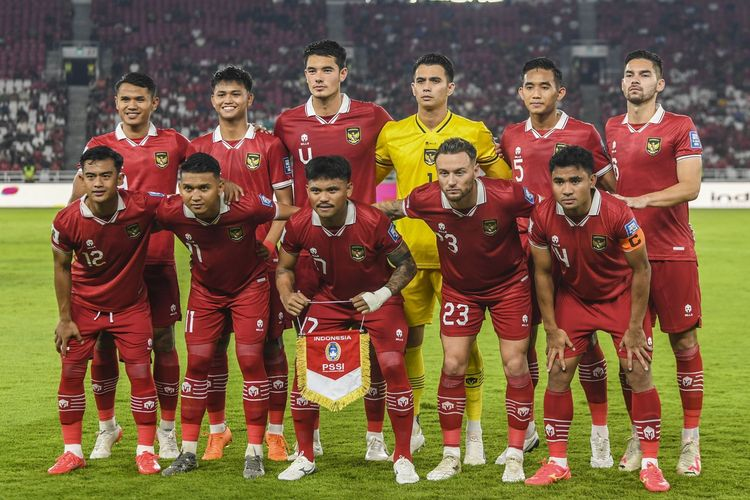

Indonesia Naik Dua Peringkat di Ranking FIFA, Lanjutkan Tren Positif di Bawah STY

kompas.com-27/10/2023
KOMPAS.com - Timnas Indonesia resmi naik dua peringkat di ranking FIFA terbaru yang dirilis pada Kamis (26/10/2023).
Timnas Indonesia kini tercatat mengoleksi 1069,82 poin dan duduk di peringkat 145 dunia serta 27 di zona AFC (Asia).
Indonesia mengalami kenaikan 16,95 poin dari ranking FIFA sebelumnya. Jumlah ini tercatat sebagai
kelima yang terbaik di zona AFC pada periode waktu tersebut. Peningkatan peringkat datang terutama
berkat kemenangan agregat 12-0 saat menghadapi Brunei Darussalam di babak pertama Kualifikasi Piala Dunia 2026 Zona Asia pada medio Oktober.
Sebelum dua laga melawan Brunei, Indonesia menempati peringkat 147 FIFA dengan perolehan poin 1052,87.
Negara Asia berikut yang bisa dilampaui Indonesia di ranking FIFA adalah Turkmenistan (1086,12), Filipina (1095,94), serta Malaysia (1096,72).
Timnas Jepang, yang akan menjadi lawan Garuda di fase grup Piala Asia 2023 pada Januari 2024 nanti, masih menjadi tim terkuat di Asia dengan raihan 1612,99 poin.
Sementara, Vietnam masih mempertahankan tempat mereka di 100 besar peringkat dunia dengan raihan 1236,25 angka untuk menjadi tim Asia Tenggara
terbaik. Alhasil, Merah Putih masih berada di peringkat kelima dari tujuh negara ASEAN di ranking FIFA.
Marc Klok dkk masih tertinggal dari Vietnam, Thailand, Malaysia, dan Filipina.
Akan tetapi, BolaSport mencatat bahwa prestasi Timnas Indonesia meningkat pesat sejak debut Shin Tae-yong memimpin Timnas
Indonesia pada laga resmi, Juni 2021. Pada bulan tersebut, Timnas Indonesia memulai dari ranking ke-173 dunia.
Dalam kata lain, Garuda naik 28 peringkat di ranking FIFA hanya dalam dua tahun terakhir